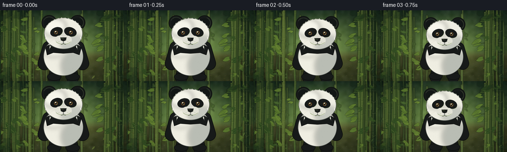
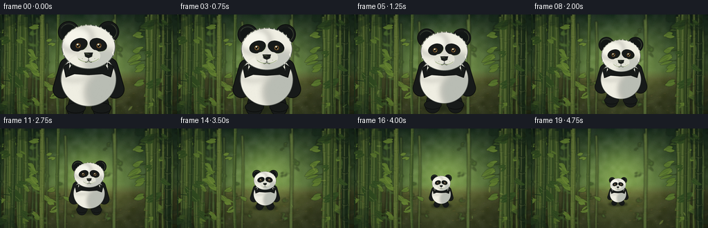
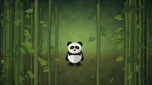

CODING AGENTS AS PIXEL WORLD MODELS
traex/DeepSeek-V4.1-Flash · instance_preservation_0046
点击播放 · 原生 RGB 像素
逐轮保存的候选
回放视频、检查图与代码变化。
每份候选均可单独播放。实际图片检查记录在下方工具轨迹中。
候选 01播放与检查图
点击播放 · 原生 RGB 像素

展开代码变化
--- 上一保存版本
+++ 本次保存版本
@@ -0,0 +1,553 @@
+from __future__ import annotations
+
+import math
+from pathlib import Path
+
+import numpy as np
+from PIL import Image, ImageDraw, ImageFilter
+
+from artifact_io import save
+
+
+W, H = 256, 144
+SS = 4
+CW, CH = W * SS, H * SS
+N = 20
+FPS = 4.0
+SEED = 4601
+
+INK = (23, 26, 25, 255)
+SOFT_INK = (43, 47, 45, 255)
+CREAM = (239, 238, 226, 255)
+CREAM_SHADE = (190, 196, 190, 255)
+WHITE_HI = (255, 254, 242, 255)
+
+
+def rgba(color):
+ return tuple(color) + (255,) if len(color) == 3 else tuple(color)
+
+
+def mix(a, b, t):
+ return tuple(round(a[i] * (1 - t) + b[i] * t) for i in range(len(a)))
+
+
+def polygon_ellipse(cx, cy, rx, ry, angle=0.0, count=72):
+ points = []
+ ca, sa = math.cos(angle), math.sin(angle)
+ for i in range(count):
+ a = math.tau * i / count
+ x, y = rx * math.cos(a), ry * math.sin(a)
+ points.append((cx + x * ca - y * sa, cy + x * sa + y * ca))
+ return points
+
+
+def draw_capsule(draw, p1, p2, radius, fill, outline=None, outline_width=5):
+ if outline is not None:
+ draw.line((p1, p2), fill=outline, width=round(radius * 2 + outline_width * 2))
+ draw.ellipse(
+ (p1[0] - radius - outline_width, p1[1] - radius - outline_width,
+ p1[0] + radius + outline_width, p1[1] + radius + outline_width),
+ fill=outline,
+ )
+ draw.ellipse(
+ (p2[0] - radius - outline_width, p2[1] - radius - outline_width,
+ p2[0] + radius + outline_width, p2[1] + radius + outline_width),
+ fill=outline,
+ )
+ draw.line((p1, p2), fill=fill, width=round(radius * 2))
+ draw.ellipse((p1[0] - radius, p1[1] - radius, p1[0] + radius, p1[1] + radius), fill=fill)
+ draw.ellipse((p2[0] - radius, p2[1] - radius, p2[0] + radius, p2[1] + radius), fill=fill)
+
+
+def draw_leaf(draw, cx, cy, length, width, angle, fill, vein=None):
+ ca, sa = math.cos(angle), math.sin(angle)
+ left, right = [], []
+ steps = 18
+ for i in range(steps + 1):
+ t = i / steps
+ x = (t - 0.5) * length
+ envelope = math.sin(math.pi * t) ** 0.72
+ y = width * envelope
+ left.append((cx + x * ca - y * sa, cy + x * sa + y * ca))
+ right.append((cx + x * ca + y * sa, cy + x * sa - y * ca))
+ draw.polygon(left + right[::-1], fill=fill)
+ if vein is not None:
+ draw.line(
+ (
+ cx - length * 0.46 * ca, cy - length * 0.46 * sa,
+ cx + length * 0.46 * ca, cy + length * 0.46 * sa,
+ ),
+ fill=vein,
+ width=max(1, round(width * 0.12)),
+ )
+
+
+def make_background(rng):
+ y = np.linspace(0.0, 1.0, CH, dtype=np.float32)[:, None]
+ x = np.linspace(0.0, 1.0, CW, dtype=np.float32)[None, :]
+
+ top = np.array([19, 39, 30], dtype=np.float32)
+ middle = np.array([76, 105, 58], dtype=np.float32)
+ floor_near = np.array([48, 57, 31], dtype=np.float32)
+ floor_far = np.array([72, 78, 43], dtype=np.float32)
+
+ sky_t = np.clip(y / 0.63, 0, 1) ** 0.72
+ sky = top[None, None, :] * (1 - sky_t[..., None]) + middle[None, None, :] * sky_t[..., None]
+ floor_t = np.clip((y - 0.60) / 0.40, 0, 1) ** 0.78
+ floor = floor_far[None, None, :] * (1 - floor_t[..., None]) + floor_near[None, None, :] * floor_t[..., None]
+ blend = np.clip((y - 0.56) / 0.09, 0, 1)
+ arr = sky * (1 - blend[..., None]) + floor * blend[..., None]
+ arr = np.broadcast_to(arr, (CH, CW, 3)).copy()
+
+ glow = np.exp(-(((x - 0.51) / 0.34) ** 2 + ((y - 0.44) / 0.40) ** 2) * 1.9)
+ arr += glow[..., None] * np.array([50, 58, 24], dtype=np.float32)
+ edge = np.clip(np.abs(x - 0.5) * 1.7, 0, 1)
+ arr *= (1.0 - edge[..., None] * 0.24)
+
+ fine = rng.normal(0, 4.2, (CH // 2, CW // 2)).astype(np.float32)
+ fine = np.asarray(Image.fromarray(np.clip(fine + 128, 0, 255).astype(np.uint8)).resize((CW, CH), Image.Resampling.BICUBIC))
+ coarse = rng.normal(0, 1.0, (24, 42)).astype(np.float32)
+ coarse = np.asarray(Image.fromarray(np.clip(coarse * 28 + 128, 0, 255).astype(np.uint8)).resize((CW, CH), Image.Resampling.BICUBIC))
+ grain = (fine.astype(np.float32) - 128) * 0.32 + (coarse.astype(np.float32) - 128) * 0.12
+ arr += grain[..., None]
+ arr = np.clip(arr, 0, 255).astype(np.uint8)
+ return Image.fromarray(arr, "RGB").convert("RGBA")
+
+
+def draw_bamboo_stalk(layer, x, width, top, bottom, color, rng, leaf_color=None):
+ draw = ImageDraw.Draw(layer, "RGBA")
+ bend = rng.uniform(-8, 8)
+ points = []
+ steps = 26
+ for i in range(steps + 1):
+ t = i / steps
+ px = x + bend * math.sin(t * math.pi) + math.sin(t * 5.3 + rng.uniform(0, 0.15)) * 1.8
+ points.append((px, top + (bottom - top) * t))
+ left = [(px - width * (0.46 + 0.03 * math.sin(i * 1.7)), py) for i, (px, py) in enumerate(points)]
+ right = [(px + width * (0.46 + 0.03 * math.cos(i * 1.3)), py) for i, (px, py) in enumerate(points)]
+ draw.polygon(left + right[::-1], fill=color)
+
+ highlight = mix(color[:3], (209, 214, 133), 0.26)
+ shadow = mix(color[:3], (16, 29, 20), 0.34)
+ draw.line([(px - width * 0.17, py) for px, py in points], fill=rgba(highlight), width=max(2, round(width * 0.13)))
+ draw.line([(px + width * 0.24, py) for px, py in points], fill=rgba(shadow), width=max(2, round(width * 0.15)))
+
+ spacing = rng.integers(85, 145)
+ node_color = mix(color[:3], (31, 46, 25), 0.36)
+ for py in range(round(top + rng.integers(20, 80)), round(bottom), int(spacing)):
+ local = (py - top) / max(1, bottom - top)
+ px = x + bend * math.sin(local * math.pi)
+ draw.line((px - width * 0.54, py, px + width * 0.54, py + 2), fill=rgba(node_color), width=max(2, round(width * 0.12)))
+ draw.arc((px - width * 0.43, py - 6, px + width * 0.43, py + 10), 8, 172, fill=rgba(highlight), width=max(1, round(width * 0.05)))
+
+ branch_color = mix(color[:3], (32, 48, 26), 0.18)
+ leaf_base = leaf_color or mix(color[:3], (111, 144, 55), 0.34)
+ for _ in range(rng.integers(2, 5)):
+ ly = rng.uniform(max(top + 60, 35), min(bottom - 30, CH - 30))
+ side = -1 if rng.random() < 0.5 else 1
+ length = rng.uniform(width * 1.3, width * 2.8)
+ ex = x + side * length
+ draw.line((x, ly, ex, ly + rng.uniform(-18, 18)), fill=rgba(branch_color), width=max(2, round(width * 0.10)))
+ for j in range(3):
+ lx = ex + side * rng.uniform(-5, 22)
+ lyy = ly + rng.uniform(-18, 18)
+ draw_leaf(
+ draw, lx, lyy,
+ length=rng.uniform(width * 1.5, width * 2.7),
+ width=rng.uniform(width * 0.30, width * 0.52),
+ angle=side * rng.uniform(0.18, 0.70) + (math.pi if side < 0 else 0) + j * 0.12,
+ fill=rgba(mix(leaf_base[:3], (35, 62, 27), rng.uniform(0.0, 0.28))),
+ vein=rgba(mix(leaf_base[:3], (202, 215, 112), 0.20)),
+ )
+
+
+def add_ground_detail(layer, rng):
+ draw = ImageDraw.Draw(layer, "RGBA")
+ # Mossy pools of light and damp earth.
+ for _ in range(52):
+ x = rng.uniform(-30, CW + 30)
+ y = rng.uniform(CH * 0.61, CH + 20)
+ rx = rng.uniform(20, 95) * (0.65 + (y / CH) * 0.75)
+ ry = rx * rng.uniform(0.13, 0.28)
+ color = (74, 91, 42, rng.integers(12, 28)) if rng.random() < 0.65 else (43, 47, 29, rng.integers(15, 35))
+ draw.ellipse((x - rx, y - ry, x + rx, y + ry), fill=color)
+
+ # Grass blades and bamboo litter.
+ for _ in range(280):
+ x = rng.uniform(0, CW)
+ y = rng.uniform(CH * 0.62, CH)
+ depth = (y - CH * 0.62) / (CH * 0.38)
+ size = rng.uniform(2.5, 8.5) * (0.45 + depth)
+ lean = rng.uniform(-8, 8)
+ color = mix((42, 69, 31), (126, 137, 63), rng.uniform(0.0, 0.55))
+ draw.line((x, y, x + lean, y - size), fill=color + (int(rng.integers(85, 170)),), width=max(1, round(size * 0.16)))
+ for _ in range(90):
+ x = rng.uniform(0, CW)
+ y = rng.uniform(CH * 0.62, CH)
+ draw_leaf(
+ draw, x, y,
+ length=rng.uniform(8, 23), width=rng.uniform(1.5, 3.8),
+ angle=rng.uniform(-0.35, 0.35),
+ fill=(92, 82, 42, rng.integers(45, 105)),
+ )
+
+ for _ in range(28):
+ x = rng.uniform(0, CW)
+ y = rng.uniform(CH * 0.67, CH - 8)
+ r = rng.uniform(1.2, 4.8) * (0.5 + y / CH)
+ draw.ellipse((x - r, y - r * 0.55, x + r, y + r * 0.55), fill=(71, 74, 55, rng.integers(80, 155)))
+
+
+def add_light(layer, rng):
+ rays = Image.new("RGBA", (CW, CH), (0, 0, 0, 0))
+ draw = ImageDraw.Draw(rays, "RGBA")
+ for i in range(8):
+ top_x = CW * (0.28 + i * 0.064) + rng.uniform(-20, 20)
+ bottom_x = top_x + rng.uniform(-170, 170)
+ width = rng.uniform(18, 65)
+ draw.polygon(
+ ((top_x - width, 0), (top_x + width, 0), (bottom_x + width * 2.1, CH), (bottom_x - width * 2.1, CH)),
+ fill=(234, 239, 156, rng.integers(4, 11)),
+ )
+ rays = rays.filter(ImageFilter.GaussianBlur(12))
+ layer.alpha_composite(rays)
+
+ motes = Image.new("RGBA", (CW, CH), (0, 0, 0, 0))
+ md = ImageDraw.Draw(motes, "RGBA")
+ for _ in range(45):
+ x, y = rng.uniform(0, CW), rng.uniform(20, CH * 0.70)
+ r = rng.uniform(0.7, 2.4)
+ md.ellipse((x - r, y - r, x + r, y + r), fill=(236, 231, 166, rng.integers(12, 42)))
+ layer.alpha_composite(motes.filter(ImageFilter.GaussianBlur(0.8)))
+
+
+def make_bamboo_background(rng):
+ bg = make_background(rng)
+
+ far = Image.new("RGBA", (CW, CH), (0, 0, 0, 0))
+ for _ in range(28):
+ x = rng.uniform(-20, CW + 20)
+ if 380 < x < 650:
+ continue
+ color = mix((51, 82, 42), (112, 131, 63), rng.uniform(0.05, 0.55))
+ draw_bamboo_stalk(
+ far, x, rng.uniform(8, 18), rng.uniform(-30, 65), CH + 10,
+ rgba(color), rng, leaf_color=(70, 102, 47),
+ )
+ far = far.filter(ImageFilter.GaussianBlur(3.8))
+ bg.alpha_composite(far)
+
+ mid = Image.new("RGBA", (CW, CH), (0, 0, 0, 0))
+ for _ in range(17):
+ x = rng.uniform(15, CW - 15)
+ if 350 < x < 675:
+ continue
+ color = mix((48, 76, 35), (111, 126, 55), rng.uniform(0.05, 0.50))
+ draw_bamboo_stalk(
+ mid, x, rng.uniform(12, 28), rng.uniform(-35, 20), CH + 20,
+ rgba(color), rng, leaf_color=(92, 123, 48),
+ )
+ mid = mid.filter(ImageFilter.GaussianBlur(1.15))
+ bg.alpha_composite(mid)
+
+ ground = Image.new("RGBA", (CW, CH), (0, 0, 0, 0))
+ add_ground_detail(ground, rng)
+ ground = ground.filter(ImageFilter.GaussianBlur(0.35))
+ bg.alpha_composite(ground)
+
+ add_light(bg, rng)
+
+ near = Image.new("RGBA", (CW, CH), (0, 0, 0, 0))
+ for x, width, color in [
+ (-8, 46, (31, 53, 29)),
+ (72, 24, (46, 70, 34)),
+ (976, 38, (29, 48, 26)),
+ (900, 19, (45, 65, 31)),
+ ]:
+ draw_bamboo_stalk(
+ near, x, width, -45, CH + 20, rgba(color), rng,
+ leaf_color=(50, 78, 35),
+ )
+ bg.alpha_composite(near)
+
+ # Soft vignette and gentle warm/cool grade.
+ arr = np.asarray(bg.convert("RGB"), dtype=np.float32)
+ yy, xx = np.mgrid[0:CH, 0:CW]
+ nx = (xx - CW / 2) / (CW / 2)
+ ny = (yy - CH / 2) / (CH / 2)
+ vignette = np.clip(1.08 - 0.24 * (nx * nx * 0.75 + ny * ny * 0.50), 0.62, 1.08)
+ arr *= vignette[..., None]
+ arr[..., 0] *= 1.025
+ arr[..., 2] *= 0.975
+ return Image.fromarray(np.clip(arr, 0, 255).astype(np.uint8), "RGB").convert("RGBA")
+
+
+def masked_glow(mask, draw_fn, blur):
+ layer = Image.new("RGBA", mask.size, (0, 0, 0, 0))
+ draw_fn(ImageDraw.Draw(layer, "RGBA"))
+ layer = layer.filter(ImageFilter.GaussianBlur(blur))
+ alpha = layer.getchannel("A").point(lambda a: a)
+ layer.putalpha(Image.composite(alpha, Image.new("L", mask.size, 0), mask))
+ return layer
+
+
+def draw_panda(rng, t):
+ size = 1000
+ sprite = Image.new("RGBA", (size, size), (0, 0, 0, 0))
+ d = ImageDraw.Draw(sprite, "RGBA")
+ breathe = 2.4 * math.sin(t * math.tau * 1.45)
+ head_dx = 2.2 * math.sin(t * math.tau * 0.72 + 0.4)
+ head_dy = -3.5 + 2.0 * math.sin(t * math.tau * 1.1)
+ arm_sway = 2.5 * math.sin(t * math.tau * 0.85)
+ blink = 1.0 if t in (0.30, 0.35, 0.75) else 0.0
+
+ # Feet and arms sit behind the pear-shaped torso.
+ draw_capsule(d, (410, 782), (386, 861), 72, INK, (9, 11, 10, 255), 5)
+ draw_capsule(d, (590, 782), (614, 861), 72, INK, (9, 11, 10, 255), 5)
+ d.ellipse((300, 806, 475, 899), fill=INK, outline=(9, 11, 10, 255), width=5)
+ d.ellipse((525, 806, 700, 899), fill=INK, outline=(9, 11, 10, 255), width=5)
+ draw_capsule(d, (324, 492), (267 + arm_sway, 688), 76, INK, (9, 11, 10, 255), 6)
+ draw_capsule(d, (676, 492), (733 + arm_sway, 688), 76, INK, (9, 11, 10, 255), 6)
+
+ body_rect = (257, 365 - breathe, 743, 839 + breathe)
+ body_mask = Image.new("L", (size, size), 0)
+ ImageDraw.Draw(body_mask).ellipse(body_rect, fill=255)
+ d.ellipse(body_rect, fill=CREAM)
+ body_shade = masked_glow(
+ body_mask,
+ lambda sd: (
+ sd.ellipse((470, 520, 810, 910), fill=(83, 95, 92, 88)),
+ sd.ellipse((205, 330, 555, 610), fill=(255, 255, 243, 80)),
+ ),
+ 28,
+ )
+ sprite.alpha_composite(body_shade)
+ d.ellipse(body_rect, outline=(84, 89, 84, 255), width=5)
+
+ # The characteristic black shoulder band.
+ band = [(281, 490), (355, 438), (500, 459), (647, 438), (719, 492),
+ (695, 581), (622, 554), (500, 563), (375, 554), (301, 583)]
+ d.polygon(band, fill=INK)
+ d.line(band + [band[0]], fill=(8, 10, 9, 255), width=5, joint="curve")
+ d.line([(326, 486), (394, 463), (500, 481), (607, 462), (677, 488)],
+ fill=(58, 63, 60, 150), width=4)
+
+ # Low-contrast fur texture on the torso and limbs.
+ white_mask = Image.new("L", (size, size), 0)
+ ImageDraw.Draw(white_mask).ellipse(body_rect, fill=255)
+ fur = Image.new("RGBA", (size, size), (0, 0, 0, 0))
+ fd = ImageDraw.Draw(fur, "RGBA")
+ for _ in range(430):
+ x = rng.uniform(292, 708)
+ y = rng.uniform(400, 810)
+ ln = rng.uniform(4, 12)
+ a = rng.uniform(-0.65, 0.65)
+ col = (104, 112, 107, rng.integers(12, 38))
+ fd.line((x, y, x + math.sin(a) * ln, y + math.cos(a) * ln), fill=col, width=1)
+ sprite.alpha_composite(Image.composite(fur, Image.new("RGBA", (size, size), (0, 0, 0, 0)), white_mask))
+
+ black_mask = Image.new("L", (size, size), 0)
+ bmd = ImageDraw.Draw(black_mask)
+ bmd.polygon(band, fill=255)
+ bmd.ellipse((296, 800, 479, 902), fill=255)
+ bmd.ellipse((521, 800, 704, 902), fill=255)
+ black_fur = Image.new("RGBA", (size, size), (0, 0, 0, 0))
+ bfd = ImageDraw.Draw(black_fur, "RGBA")
+ for _ in range(300):
+ x = rng.uniform(240, 760)
+ y = rng.uniform(430, 885)
+ ln = rng.uniform(3, 11)
+ bfd.line((x, y, x + rng.uniform(-3, 3), y + ln), fill=(104, 108, 103, rng.integers(8, 28)), width=1)
+ sprite.alpha_composite(Image.composite(black_fur, Image.new("RGBA", (size, size), (0, 0, 0, 0)), black_mask))
+
+ # A soft shadow beneath the head gives the neck some volume.
+ neck_shadow = Image.new("RGBA", (size, size), (0, 0, 0, 0))
+ ImageDraw.Draw(neck_shadow).ellipse((350, 435, 650, 520), fill=(28, 36, 34, 78))
+ sprite.alpha_composite(neck_shadow.filter(ImageFilter.GaussianBlur(25)))
+
+ # Ears are behind the head.
+ for cx, sign in ((326, -1), (674, 1)):
+ ear = (cx - 94, 91, cx + 94, 279)
+ d.ellipse(ear, fill=INK, outline=(9, 11, 10, 255), width=6)
+ d.ellipse((cx - 65, 126, cx + 65, 245), fill=(18, 22, 21, 255))
+ d.arc((cx - 73, 113, cx + 73, 254), 205 if sign < 0 else 292, 350 if sign < 0 else 75,
+ fill=(77, 81, 76, 120), width=4)
+
+ head_rect = (264 + head_dx, 128 + head_dy, 736 + head_dx, 515 + head_dy)
+ head_mask = Image.new("L", (size, size), 0)
+ ImageDraw.Draw(head_mask).ellipse(head_rect, fill=255)
+ d.ellipse(head_rect, fill=CREAM)
+ head_shade = masked_glow(
+ head_mask,
+ lambda sd: (
+ sd.ellipse((465, 330, 785, 570), fill=(86, 99, 98, 72)),
+ sd.ellipse((235, 125, 535, 355), fill=(255, 255, 246, 105)),
+ ),
+ 26,
+ )
+ sprite.alpha_composite(head_shade)
+ d.ellipse(head_rect, outline=(80, 86, 82, 255), width=6)
+
+ # Cheek fluff softens the circular head silhouette.
+ for cx, cy, sx, sy in ((303, 365, -1, 1), (697, 365, 1, 1), (355, 477, -1, 1), (645, 477, 1, 1)):
+ pts = []
+ for i in range(7):
+ yy = cy + (i - 3) * 13 * sy
+ reach = (18 + 9 * math.sin(i * 1.4)) * sx
+ pts.append((cx + reach, yy))
+ d.polygon(pts, fill=CREAM)
+
+ # Eye patches are angled, organic, and slightly asymmetric.
+ left_patch = polygon_ellipse(415 + head_dx, 302 + head_dy, 78, 56, -0.34)
+ right_patch = polygon_ellipse(585 + head_dx, 302 + head_dy, 78, 56, 0.34)
+ d.polygon(left_patch, fill=INK)
+ d.polygon(right_patch, fill=INK)
+ d.line(left_patch[:19] + left_patch[19:20], fill=(67, 71, 68, 90), width=3)
+ d.line(right_patch[:19] + right_patch[19:20], fill=(67, 71, 68, 90), width=3)
+
+ for cx, sign in ((409 + head_dx, -1), (591 + head_dx, 1)):
+ ey = 309 + head_dy
+ if blink:
+ d.arc((cx - 25, ey - 9, cx + 25, ey + 14), 15, 165, fill=(185, 188, 175, 210), width=5)
+ else:
+ d.ellipse((cx - 22, ey - 21, cx + 22, ey + 23), fill=(104, 72, 35, 255))
+ d.ellipse((cx - 12, ey - 12, cx + 12, ey + 14), fill=(16, 16, 13, 255))
+ d.ellipse((cx - 13, ey - 16, cx + 3, ey - 2), fill=(239, 240, 216, 235))
+ d.ellipse((cx + 5, ey + 7, cx + 12, ey + 14), fill=(255, 255, 240, 150))
+
+ # Muzzle, nose and mouth.
+ d.ellipse((397 + head_dx, 348 + head_dy, 505 + head_dx, 449 + head_dy), fill=(225, 225, 213, 255))
+ d.ellipse((495 + head_dx, 348 + head_dy, 603 + head_dx, 449 + head_dy), fill=(225, 225, 213, 255))
+ d.arc((401 + head_dx, 350 + head_dy, 599 + head_dx, 455 + head_dy), 25, 155,
+ fill=(155, 158, 148, 80), width=4)
+
+ nose = [
+ (461 + head_dx, 371 + head_dy), (539 + head_dx, 371 + head_dy),
+ (529 + head_dx, 407 + head_dy), (500 + head_dx, 420 + head_dy),
+ (471 + head_dx, 407 + head_dy),
+ ]
+ d.polygon(nose, fill=(27, 30, 28, 255))
+ d.line((471 + head_dx, 378 + head_dy, 505 + head_dx, 386 + head_dy),
+ fill=(92, 96, 89, 110), width=4)
+ d.line((500 + head_dx, 418 + head_dy, 500 + head_dx, 438 + head_dy),
+ fill=(61, 63, 58, 255), width=4)
+ d.arc((455 + head_dx, 412 + head_dy, 500 + head_dx, 458 + head_dy), 3, 112,
+ fill=(61, 63, 58, 255), width=4)
+ d.arc((500 + head_dx, 412 + head_dy, 545 + head_dx, 458 + head_dy), 68, 177,
+ fill=(61, 63, 58, 255), width=4)
+
+ for cx, cy in ((464, 401), (536, 401), (446, 423), (554, 423)):
+ d.ellipse((cx + head_dx - 2, cy + head_dy - 2, cx + head_dx + 2, cy + head_dy + 2),
+ fill=(98, 99, 90, 125))
+
+ # Fur tufts around the crown and cheeks.
+ for i in range(14):
+ a = math.pi * (0.10 + 0.80 * i / 13)
+ cx = 500 + 232 * math.cos(a) + head_dx
+ cy = 321 - 190 * math.sin(a) + head_dy
+ d.polygon(
+ [(cx - 8, cy + 5), (cx + rng.uniform(-3, 3), cy - rng.uniform(7, 14)), (cx + 8, cy + 4)],
+ fill=(238, 237, 225, 220),
+ )
+
+ # Subtle rim light separates the dark fur from the shaded forest.
+ rim = Image.new("RGBA", (size, size), (0, 0, 0, 0))
+ rd = ImageDraw.Draw(rim, "RGBA")
+ rd.arc((261, 123, 739, 520), 178, 275, fill=(255, 250, 205, 85), width=6)
+ rd.arc((252, 360, 748, 844), 174, 255, fill=(255, 250, 205, 45), width=5)
+ sprite.alpha_composite(rim.filter(ImageFilter.GaussianBlur(1.1)))
+
+ return sprite
+
+
+def draw_shadow(canvas, cx, feet_y, scale):
+ shadow = Image.new("RGBA", (CW, CH), (0, 0, 0, 0))
+ sd = ImageDraw.Draw(shadow, "RGBA")
+ rx = 180 * scale + 20
+ ry = 28 * scale + 7
+ sd.ellipse((cx - rx, feet_y - ry, cx + rx, feet_y + ry), fill=(9, 16, 12, int(95 + 35 * (1 - scale))))
+ shadow = shadow.filter(ImageFilter.GaussianBlur(max(4, round(12 * scale + 3))))
+ canvas.alpha_composite(shadow)
+
+
+def draw_floating_leaves(canvas, rng, t):
+ leaves = Image.new("RGBA", (CW, CH), (0, 0, 0, 0))
+ ld = ImageDraw.Draw(leaves, "RGBA")
+ specs = [
+ (140, 92, 9.0, 0.17, 18, 5),
+ (760, 160, 13.0, 0.32, 23, 6),
+ (870, 90, 8.0, 0.55, 16, 4),
+ (220, 300, 11.0, 0.80, 21, 5),
+ (688, 358, 7.0, 0.40, 13, 3),
+ (945, 290, 10.0, 0.10, 20, 4),
+ ]
+ for i, (x0, y0, fall, phase, length, width) in enumerate(specs):
+ tt = (t + phase) % 1.0
+ x = x0 + 28 * math.sin(tt * math.tau * 1.3 + i) + tt * 22
+ y = y0 + tt * 92 * fall
+ angle = tt * math.tau * 0.7 + i * 0.9
+ col = mix((85, 119, 48), (155, 155, 67), 0.22 + 0.18 * math.sin(i))
+ draw_leaf(ld, x, y, length * 1.5, width, angle, col + (135,),
+ vein=(210, 215, 120, 90))
+ canvas.alpha_composite(leaves.filter(ImageFilter.GaussianBlur(0.25)))
+
+
+def add_foreground(canvas, rng):
+ fg = Image.new("RGBA", (CW, CH), (0, 0, 0, 0))
+ d = ImageDraw.Draw(fg, "RGBA")
+ # Blurred leaf clusters create depth without covering the subject.
+ clusters = [
+ (30, 20, 0.7), (150, 7, 0.4), (870, 0, 0.9), (1000, 45, 0.5),
+ (16, 525, 0.7), (1020, 515, 0.6),
+ ]
+ for cx, cy, bias in clusters:
+ for _ in range(10):
+ draw_leaf(
+ d, cx + rng.uniform(-75, 75), cy + rng.uniform(-35, 55),
+ length=rng.uniform(55, 110), width=rng.uniform(8, 18),
+ angle=rng.uniform(-1.2, 1.2),
+ fill=(22, 39, 24, rng.integers(70, 145)),
+ )
+ canvas.alpha_composite(fg.filter(ImageFilter.GaussianBlur(3.0)))
+
+
+def render():
+ rng = np.random.default_rng(SEED)
+ background = make_bamboo_background(rng)
+ frames = []
+
+ for i in range(N):
+ t = i / (N - 1)
+ ease = t * t * (3 - 2 * t)
+ canvas = background.copy()
+ draw_floating_leaves(canvas, np.random.default_rng(SEED + 300), t)
+
+ scale = 0.660 - 0.465 * ease
+ cx = CW * 0.5 + 9 * math.sin(t * math.tau * 0.75)
+ feet_y = CH * (0.956 - 0.205 * ease) + 2.0 * math.sin(t * math.tau * 1.45)
+
+ draw_shadow(canvas, cx, feet_y + 5, scale)
+ panda = draw_panda(np.random.default_rng(SEED + 100 + i), t)
+ panda_size = max(1, round(1000 * scale))
+ panda = panda.resize((panda_size, panda_size), Image.Resampling.LANCZOS)
+ # The sprite's foot baseline is y=868 in its 1000-unit coordinate system.
+ px = round(cx - panda_size * 0.5)
+ py = round(feet_y - panda_size * 0.868)
+ canvas.alpha_composite(panda, (px, py))
+
+ add_foreground(canvas, np.random.default_rng(SEED + 900))
+ frame = canvas.convert("RGB").resize((W, H), Image.Resampling.LANCZOS)
+ frames.append(np.asarray(frame, dtype=np.uint8))
+
+ return np.stack(frames)
+
+
+def main():
+ case_dir = Path(__file__).resolve().parent
+ frames = render()
+ save(frames, case_dir)
+ print(f"saved {len(frames)} frames to {case_dir}")
+
+
+if __name__ == "__main__":
+ main()
候选 02播放与检查图
点击播放 · 原生 RGB 像素

展开代码变化
--- 上一保存版本
+++ 本次保存版本
@@ -297,7 +297,7 @@
d = ImageDraw.Draw(sprite, "RGBA")
breathe = 2.4 * math.sin(t * math.tau * 1.45)
head_dx = 2.2 * math.sin(t * math.tau * 0.72 + 0.4)
- head_dy = -3.5 + 2.0 * math.sin(t * math.tau * 1.1)
+ head_dy = 18.0 + 2.0 * math.sin(t * math.tau * 1.1)
arm_sway = 2.5 * math.sin(t * math.tau * 0.85)
blink = 1.0 if t in (0.30, 0.35, 0.75) else 0.0
@@ -325,8 +325,8 @@
d.ellipse(body_rect, outline=(84, 89, 84, 255), width=5)
# The characteristic black shoulder band.
- band = [(281, 490), (355, 438), (500, 459), (647, 438), (719, 492),
- (695, 581), (622, 554), (500, 563), (375, 554), (301, 583)]
+ band = [(281, 493), (355, 463), (500, 478), (647, 463), (719, 494),
+ (695, 572), (622, 551), (500, 559), (375, 551), (301, 574)]
d.polygon(band, fill=INK)
d.line(band + [band[0]], fill=(8, 10, 9, 255), width=5, joint="curve")
d.line([(326, 486), (394, 463), (500, 481), (607, 462), (677, 488)],
@@ -373,15 +373,15 @@
d.arc((cx - 73, 113, cx + 73, 254), 205 if sign < 0 else 292, 350 if sign < 0 else 75,
fill=(77, 81, 76, 120), width=4)
- head_rect = (264 + head_dx, 128 + head_dy, 736 + head_dx, 515 + head_dy)
+ head_rect = (264 + head_dx, 100 + head_dy, 736 + head_dx, 489 + head_dy)
head_mask = Image.new("L", (size, size), 0)
ImageDraw.Draw(head_mask).ellipse(head_rect, fill=255)
d.ellipse(head_rect, fill=CREAM)
head_shade = masked_glow(
head_mask,
lambda sd: (
- sd.ellipse((465, 330, 785, 570), fill=(86, 99, 98, 72)),
- sd.ellipse((235, 125, 535, 355), fill=(255, 255, 246, 105)),
+ sd.ellipse((465, 304, 785, 544), fill=(86, 99, 98, 72)),
+ sd.ellipse((235, 99, 535, 329), fill=(255, 255, 246, 105)),
),
26,
)
@@ -398,15 +398,15 @@
d.polygon(pts, fill=CREAM)
# Eye patches are angled, organic, and slightly asymmetric.
- left_patch = polygon_ellipse(415 + head_dx, 302 + head_dy, 78, 56, -0.34)
- right_patch = polygon_ellipse(585 + head_dx, 302 + head_dy, 78, 56, 0.34)
+ left_patch = polygon_ellipse(415 + head_dx, 278 + head_dy, 78, 56, -0.34)
+ right_patch = polygon_ellipse(585 + head_dx, 278 + head_dy, 78, 56, 0.34)
d.polygon(left_patch, fill=INK)
d.polygon(right_patch, fill=INK)
d.line(left_patch[:19] + left_patch[19:20], fill=(67, 71, 68, 90), width=3)
d.line(right_patch[:19] + right_patch[19:20], fill=(67, 71, 68, 90), width=3)
for cx, sign in ((409 + head_dx, -1), (591 + head_dx, 1)):
- ey = 309 + head_dy
+ ey = 285 + head_dy
if blink:
d.arc((cx - 25, ey - 9, cx + 25, ey + 14), 15, 165, fill=(185, 188, 175, 210), width=5)
else:
@@ -416,27 +416,27 @@
d.ellipse((cx + 5, ey + 7, cx + 12, ey + 14), fill=(255, 255, 240, 150))
# Muzzle, nose and mouth.
- d.ellipse((397 + head_dx, 348 + head_dy, 505 + head_dx, 449 + head_dy), fill=(225, 225, 213, 255))
- d.ellipse((495 + head_dx, 348 + head_dy, 603 + head_dx, 449 + head_dy), fill=(225, 225, 213, 255))
- d.arc((401 + head_dx, 350 + head_dy, 599 + head_dx, 455 + head_dy), 25, 155,
+ d.ellipse((397 + head_dx, 324 + head_dy, 505 + head_dx, 425 + head_dy), fill=(225, 225, 213, 255))
+ d.ellipse((495 + head_dx, 324 + head_dy, 603 + head_dx, 425 + head_dy), fill=(225, 225, 213, 255))
+ d.arc((401 + head_dx, 326 + head_dy, 599 + head_dx, 431 + head_dy), 25, 155,
fill=(155, 158, 148, 80), width=4)
nose = [
- (461 + head_dx, 371 + head_dy), (539 + head_dx, 371 + head_dy),
- (529 + head_dx, 407 + head_dy), (500 + head_dx, 420 + head_dy),
- (471 + head_dx, 407 + head_dy),
+ (461 + head_dx, 347 + head_dy), (539 + head_dx, 347 + head_dy),
+ (529 + head_dx, 383 + head_dy), (500 + head_dx, 396 + head_dy),
+ (471 + head_dx, 383 + head_dy),
]
d.polygon(nose, fill=(27, 30, 28, 255))
- d.line((471 + head_dx, 378 + head_dy, 505 + head_dx, 386 + head_dy),
+ d.line((471 + head_dx, 354 + head_dy, 505 + head_dx, 362 + head_dy),
fill=(92, 96, 89, 110), width=4)
- d.line((500 + head_dx, 418 + head_dy, 500 + head_dx, 438 + head_dy),
+ d.line((500 + head_dx, 394 + head_dy, 500 + head_dx, 414 + head_dy),
fill=(61, 63, 58, 255), width=4)
- d.arc((455 + head_dx, 412 + head_dy, 500 + head_dx, 458 + head_dy), 3, 112,
+ d.arc((455 + head_dx, 388 + head_dy, 500 + head_dx, 434 + head_dy), 3, 112,
fill=(61, 63, 58, 255), width=4)
- d.arc((500 + head_dx, 412 + head_dy, 545 + head_dx, 458 + head_dy), 68, 177,
+ d.arc((500 + head_dx, 388 + head_dy, 545 + head_dx, 434 + head_dy), 68, 177,
fill=(61, 63, 58, 255), width=4)
- for cx, cy in ((464, 401), (536, 401), (446, 423), (554, 423)):
+ for cx, cy in ((464, 377), (536, 377), (446, 399), (554, 399)):
d.ellipse((cx + head_dx - 2, cy + head_dy - 2, cx + head_dx + 2, cy + head_dy + 2),
fill=(98, 99, 90, 125))
@@ -444,7 +444,7 @@
for i in range(14):
a = math.pi * (0.10 + 0.80 * i / 13)
cx = 500 + 232 * math.cos(a) + head_dx
- cy = 321 - 190 * math.sin(a) + head_dy
+ cy = 293 - 190 * math.sin(a) + head_dy
d.polygon(
[(cx - 8, cy + 5), (cx + rng.uniform(-3, 3), cy - rng.uniform(7, 14)), (cx + 8, cy + 4)],
fill=(238, 237, 225, 220),
@@ -453,7 +453,7 @@
# Subtle rim light separates the dark fur from the shaded forest.
rim = Image.new("RGBA", (size, size), (0, 0, 0, 0))
rd = ImageDraw.Draw(rim, "RGBA")
- rd.arc((261, 123, 739, 520), 178, 275, fill=(255, 250, 205, 85), width=6)
+ rd.arc((261, 95, 739, 494), 178, 275, fill=(255, 250, 205, 85), width=6)
rd.arc((252, 360, 748, 844), 174, 255, fill=(255, 250, 205, 45), width=5)
sprite.alpha_composite(rim.filter(ImageFilter.GaussianBlur(1.1)))
@@ -537,6 +537,11 @@
add_foreground(canvas, np.random.default_rng(SEED + 900))
frame = canvas.convert("RGB").resize((W, H), Image.Resampling.LANCZOS)
+ pixels = np.asarray(frame, dtype=np.float32)
+ # Lift the shaded subject slightly as it recedes, preserving a crisp final silhouette.
+ lift = 0.035 + 0.055 * ease
+ pixels = 128 + (pixels - 128) * (1.0 + lift)
+ frame = Image.fromarray(np.clip(pixels, 0, 255).astype(np.uint8))
frames.append(np.asarray(frame, dtype=np.uint8))
return np.stack(frames)
候选 03播放与检查图
可观测工具轨迹
实际执行的命令与返回图片。
命令 1exit 0
/bin/bash -c "pwd && rg --files -g 'prompt.txt' -g 'GENERATION_RULES.md' -g 'task_spec.json' -g '"'!*.mp4'"' -g '"'!*.mov'"' | sort"
命令 2exit 0
/bin/bash -c "ls -la && find . -maxdepth 2 -type f | sed 's#"'^./##'"' | sort | head -200"
命令 3exit 0
/bin/bash -c 'git status --short --branch 2>/dev/null || true'
命令 4exit 0
/bin/bash -c 'cat prompt.txt'
命令 5exit 0
/bin/bash -c 'cat GENERATION_RULES.md'
命令 6exit 0
/bin/bash -c 'cat task_spec.json'
命令 7exit 0
/bin/bash -c "sed -n '1,260p' artifact_io.py"
命令 8exit 0
/bin/bash -c "sed -n '1,260p' player_template.html"
命令 9exit 0
/bin/bash -c "python - <<'PY'
from PIL import Image
print('Pillow', Image.__version__)
import numpy as np
print('numpy', np.__version__)
PY
command -v ffmpeg || true"命令 10exit 0
/bin/bash -c "rg -n 'rgba\\(["'^'"\\n]+\\) \\+|rgba\\(' generate.py | head -80"命令 11exit 1
/bin/bash -c 'python generate.py'
命令 12exit 1
/bin/bash -c 'python generate.py'
命令 13exit 0
/bin/bash -c 'python generate.py'
命令 14exit 0
/bin/bash -c 'python generate.py'
命令 15exit 0
/bin/bash -c "python - <<'PY'
from pathlib import Path
from PIL import Image
import json, numpy as np
frames=sorted(Path('frames').glob('*.png'))
print('frame_count', len(frames))
for p in (frames[0],frames[9],frames[-1]):
im=Image.open(p)
a=np.asarray(im)
print(p.name, im.mode, im.size, 'mean', np.round(a.mean((0,1)),1).tolist(), 'unique', len(np.unique(a.reshape(-1,3),axis=0)))
with np.load('pixels.npz') as z:
print('pixels.npz', z['pixels'].shape, z['pixels'].dtype)
idx=Path('index.html').read_text()
print('index.html_bytes', len(idx), 'ready_hook', '__pixelReady' in idx)
print('artifacts', [(p.name,p.stat().st_size) for p in sorted(Path('.').glob('*')) if p.is_file()])
PY"命令 16exit 0
/bin/bash -c 'python -m py_compile generate.py && sha256sum generate.py pixels.npz index.html inspection.png'
命令 17exit 0
/bin/bash -c "find . -maxdepth 2 -type f -printf '%p %s\\n' | sort"
视觉工具实际返回图片 1

视觉工具实际返回图片 2
视觉工具实际返回图片 3

视觉工具实际返回图片 4

视觉工具实际返回图片 5

保存候选 3 份；完成命令 17 次；可验证图片返回 5 张。原始 API 响应与完整日志保留在本地。